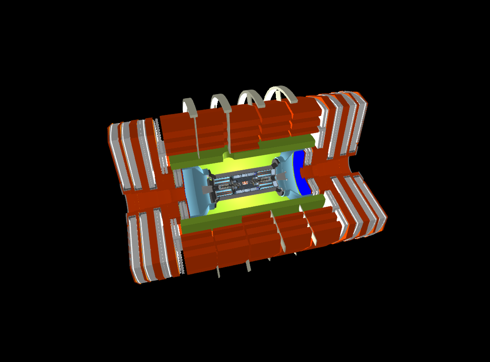
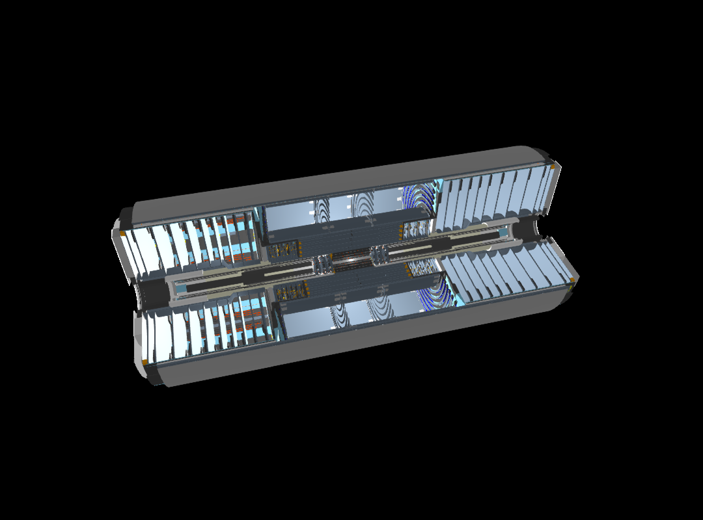
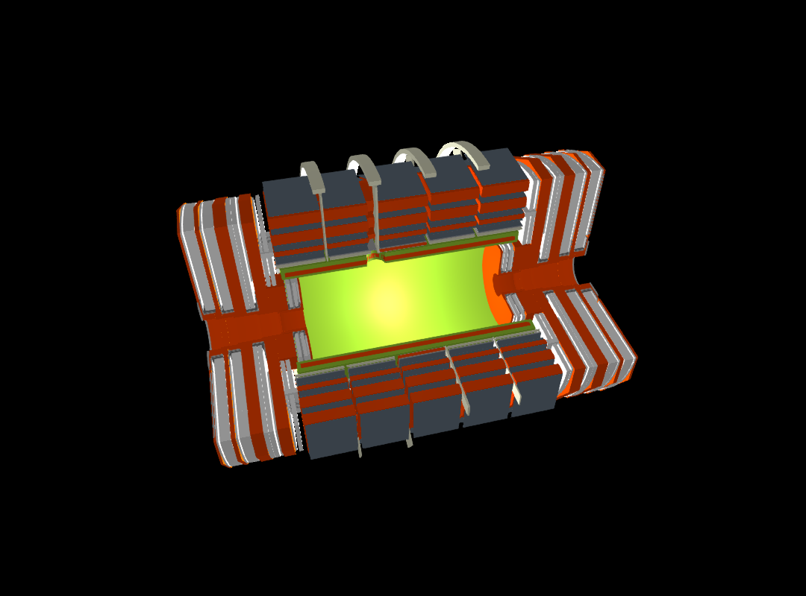
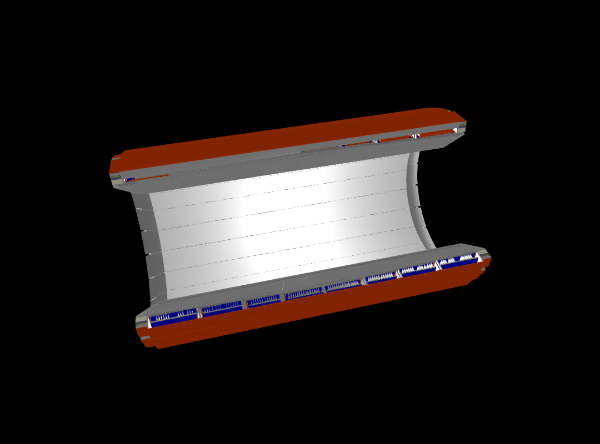

GDML rendering example (CMS)
In this example we demonstrate how to render detector geometries from a GDML file in Geant4. The example uses the CMS detector model and renders a number of logical volumes to a PNG image. The rendering is done using the GLMakie backend of the Makie.jl graphics library.
Limitations of the current implementation:
- The rending is limited to a maximum level of 5 in the geometry hierarchy to avoid excessive mesh generation and rendering times. This can be adjusted with the
maxlevelkeyword argument in thedrawfunction. - Be aware that often the Geant4 boolean processor fails to generate meshes of complex boolean solids. This is noticed by the presence of rendering artifacts when clipping is applied or getting stuck in an infinite mesh generation loop. Reduce the
maxlevelor apply clipping to mitigate this issue.
You can also download this example as a Jupyter notebook and a plain Julia source file.
Loading the necessary Julia modules
Geant4andGeant4.SystemOfUnitsfor the Geant4 interface and unitsGLMakiefor the OpenGL-based rendering backend of Makie
using Geant4
using Geant4.SystemOfUnits
using GLMakieSet the number of rotation steps for polyhedra to get smoother meshes
HepPolyhedron!SetNumberOfRotationSteps(64)
set_theme!(backgroundcolor = :black)Create the detector geometry from a GDML file
The function G4JLDetectorGDML reads a GDML file and creates the corresponding Geant4 geometry. The validate_schema=false option is used to skip GDML schema validation for faster loading.
detname = "cms2018"
detector = G4JLDetectorGDML("$(@__DIR__)/$(detname).gdml"; validate_schema=false);G4GDML: Reading '/home/runner/work/Geant4.jl/Geant4.jl/docs/src/examples/cms2018.gdml'...
G4GDML: Reading definitions...
G4GDML: Reading materials...
G4GDML: Reading solids...
G4GDML: Reading structure...
G4GDML: Reading userinfo...
G4GDML: Reading setup...
G4GDML: Reading '/home/runner/work/Geant4.jl/Geant4.jl/docs/src/examples/cms2018.gdml' done!
Stripping off GDML names of materials, solids and volumes ...
Get the logical volumes to render
CMS = GetVolume("CMSE")[]
tracker = GetVolume("Tracker")[]
muon = GetVolume("MUON")[]
ebar = GetVolume("EBAR")[]Geant4.G4LogicalVolumeDereferenced(Ptr{Nothing}(0x00000000284e9630))Create and render scenes
- You can adjust the
maxlevelkeyword argument in thedraw!function to control the level of detail in the rendering. - The
clipkeyword argument can be used to apply clipping planes to the geometry for better visibility of internal structures. In this example, we useclip=:xyto clip along the X=0 and Y=0 planes. Other possible values are:x,:y,:zfor single-plane,:xz,:yz,:xyzclipping for double and triple planes, and:nonefor no clipping. - Lighting options and camera position can be adjusted. See the
LightingandCamera3Ddocumentation of Makie.
for lv in (CMS, tracker, muon, ebar)
lvname = GetName(lv) |> String
println("Drawing logical volume: $lvname")
fig = Figure(size=(1080, 800))
ax = LScene(fig[1, 1]; show_axis=false, scenekw=(;
lights=[ PointLight(RGBf(1, 1, 1), Vec3f(1, 1, 0)),
DirectionalLight(RGBf(1, 1, 1), Vec3f(1, 1, 1) ),
AmbientLight(RGBf(.5, .5, .5)),
]))
Camera3D(ax.scene, upvector=Vec3f(0, 1, 0), eyeposition=Vec3f(8m, 8m, 2m), lookat=Vec3f(0, 0, 0))
draw!(ax, lv; maxlevel=5, clip=:xy);
#display(fig)
save("$(detname)_$(lvname).png", fig)
endDrawing logical volume: CMSE
Collecting LV meshes with clip=xy...
2.415475 seconds (6.90 M allocations: 331.089 MiB, 23.39% gc time, 80.47% compilation time)
Drawning 4340 meshes with total of 546726 points in 11 steps.
3.739632 seconds (7.52 M allocations: 2.030 GiB, 18.96% gc time, 64.51% compilation time)
Drawing logical volume: Tracker
Collecting LV meshes with clip=xy...
1.829472 seconds (11.84 M allocations: 573.675 MiB, 10.89% gc time, 45.31% compilation time)
Drawning 3867 meshes with total of 932850 points in 11 steps.
2.025956 seconds (6.64 M allocations: 3.005 GiB, 64.04% gc time)
Drawing logical volume: MUON
Collecting LV meshes with clip=xy...
0.641242 seconds (1.51 M allocations: 84.718 MiB, 79.11% compilation time)
Drawning 4260 meshes with total of 175743 points in 7 steps.
0.748765 seconds (1.05 M allocations: 512.138 MiB, 81.49% gc time)
Drawing logical volume: EBAR
Collecting LV meshes with clip=xy...
3.860882 seconds (29.78 M allocations: 1.408 GiB, 29.11% gc time, 20.22% compilation time)
Drawning 59228 meshes with total of 3383754 points in 6 steps.
5.221427 seconds (18.32 M allocations: 13.132 GiB, 49.09% gc time)
Show the resulting images
CMS detector rendering (maxlevel=5)

Tracker rendering (maxlevel=5)

Muon System rendering (maxlevel=5)

ECAL Barrel rendering (maxlevel=5)

This page was generated using Literate.jl.